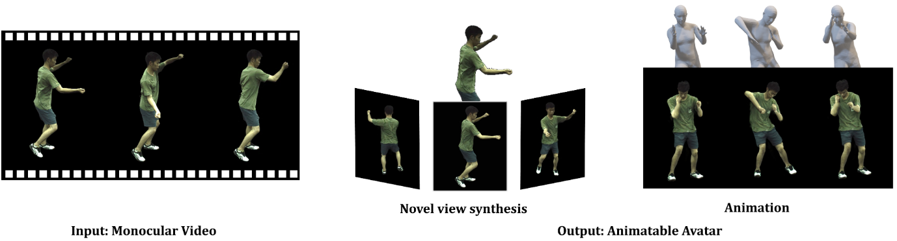
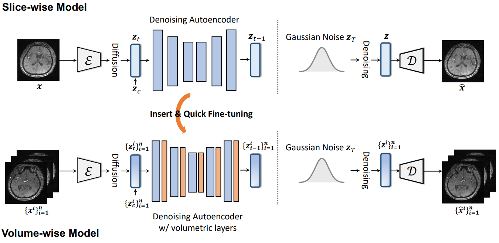

|
Department of Information Engineering The Chinese University of Hong Kong E-mail / CV / Google Scholar / Github / Twitter |

|
Full Publications [ Home ] (* indicates equal contribution)
| Selected / All by Year / Image Generation / Video Generation / 3D Generation / 4D Generation |

|
Learning Hierarchical Cross-Modal Association for Co-Speech Gesture Generation
IEEE/CVF Conference on Computer Vision and Pattern Recognition (CVPR), 2022.
Also appears at CVPR 2022 Sight and Sound Workshop. [5-min Invited Talk] (link)
|

|
Taming Diffusion Models for Audio-Driven Co-Speech Gesture Generation
IEEE/CVF Conference on Computer Vision and Pattern Recognition (CVPR), 2023.
|

|
Object-Compositional Neural Implicit Surfaces
European Conference on Computer Vision (ECCV), 2022.
|
|  |
MonoHuman: Animatable Human Neural Field from Monocular Video
IEEE/CVF Conference on Computer Vision and Pattern Recognition (CVPR), 2023.
|
|  |
Make-A-Volume: Leveraging Latent Diffusion Models for Cross-Modality 3D Brain MRI Synthesis
Medical Image Computing and Computer Assisted Intervention (MICCAI), 2023.
|